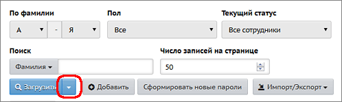
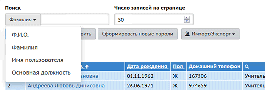
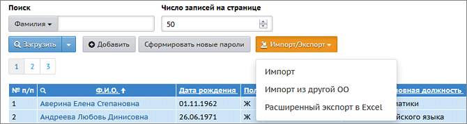

На этой странице отображается список сотрудников образовательной организации. Для этого выберите параметры фильтров "По фамилии" и "Пол" и нажмите кнопку Загрузить.
В таблице выводятся Ф.И.О., Пол, Основная должность, Мобильный телефон и Функция (роль) в системе (администратор, завуч, учитель, технический персонал, и т.д.). Чтобы получить детальную информацию о сотруднике, нажмите на него левой кнопкой мыши, и вы окажетесь на странице Сведения о сотруднике.
|
Нажав на треугольник справа от кнопки Загрузить, вы можете настроить вид списка сотрудников. Откроется окно "Настройки", в котором можно отметить дополнительные поля, и они появятся в списке сотрудников.
|
 |
Кнопка Экспорт в Excel в правой верхней части экрана позволяет сохранить список сотрудников в формате Excel. В том числе, таким образом при помощи Excel можно распечатать список. В файл Excel попадает тот же самый набор полей, который отображён на экране (в том числе это касается выбранных фильтров).
Быстрый поиск сотрудников
Чтобы быстро найти нужного сотрудника, в графе "Поиск" введите первые буквы фамилии, и список будет сразу ограничен нужными сотрудниками. Кроме фамилии, можно быстро искать по другим полям, например, по должности:

Что означает фильтр "Текущий статус"?
| · | Если выбрано "Все сотрудники": в списке выводятся все сотрудники в текущем учебном году, включая работающих и тех, кто был уволен только в текущем учебном году.
|
| · | Если выбрано "Работающие": в списке выводятся только те сотрудники, которые в текущем учебном году не имеют статус "Уволен".
|
| · | Если выбрано "Уволенные": в списке выводятся сотрудники со статусом "Уволен", причем из всех учебных годов, а не только из текущего года. Это необходимо, чтобы была возможность восстановить (снова принять на работу) сотрудника, когда-либо работавшего в ОО.
|
Внимание: количество сотрудников в категории "Все" может быть меньше, чем суммарное количество "работающих" и "уволенных" (из-за того, что категории "Все" и "Работающие" выводят только сведения по текущему учебном году, а "Уволенные" - сведения по всем учебным годам).
См. подробно об увольнении сотрудников...
Кнопки "Добавить" и "Импорт/Экспорт"

Эти кнопки присутствуют при наличии права доступа Редактировать все сведения о сотрудниках (как правило, у пользователей-учителей нет такого права доступа).
| · | Кнопка Добавить позволяет ввести новые записи сотрудников с помощью формы для ввода.
|
| · | Кнопка Импорт/Экспорт обеспечивает:
|
| 1. Возможность ввода целого списка сотрудников (команды Импорт, Импорт из другой ОО).
|
| 2. Возможность выгрузки полных сведений о сотрудниках в файл Excel (команда Расширенный экспорт в Excel).
|
Кнопка "Сформировать новые пароли"
Администратор системы может провести индивидуальную или массовую смену паролей, с присвоением случайных паролей, которые он затем может раздать сотрудникам.
| 1. | Выведите на экран список сотрудников (с помощью кнопки Загрузить).
|
| 2. | Нажмите кнопку Сформировать новые пароли.
|
| 3. | Отметьте сотрудников, которым система должна сгенерировать новые пароли. Для этого просто щёлкните по нужным строкам в таблице: при выделении строки меняют цвет. Затем нажмите кнопку Продолжить. Обратите внимание! Выбранным сотрудникам будет сброшен их текущий пароль.
|
| 4. | Система присвоит выбранным сотрудникам новые пароли, которые будут случайной последовательностью латинских букв, цифр и знаков препинания.
|
| 5. | На экран будет выведена таблица сотрудников, которым сформированы новые пароли, с удобной возможностью распечатать этот список. Обратите внимание! Кроме этой таблицы, новые пароли нигде не отображаются, их необходимо сразу распечатать либо скопировать с экрана.
|
| 6. | При первом входе в систему сотрудника с новым паролем, система предложит ему сменить пароль на свой собственный.
|
Кнопка Сформировать новые пароли доступна только пользователям с ролью "Администратор системы", причём только если для этой роли выставлены права доступа: Редактировать все сведения о сотрудниках и Редактировать имена пользователей и пароли сотрудников.
Экспорт в Moodle
Данная кнопка в правом верхнем углу экрана позволяет выгрузить список учителей в файл, который затем можно импортировать в систему дистанционного обучения Moodle. (Подробнее о совместной работе систем "Сетевой Город. Образование" и "Moodle" можно прочитать в документации в инсталляционном пакете "Сетевого Города".)